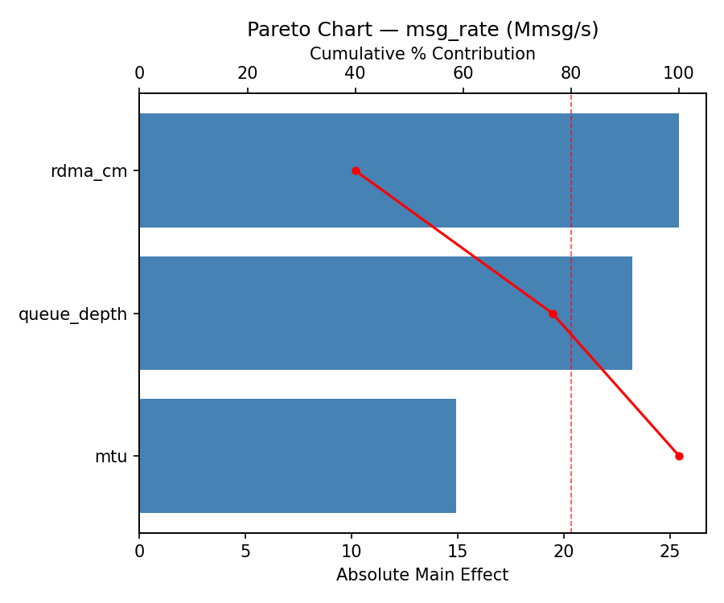
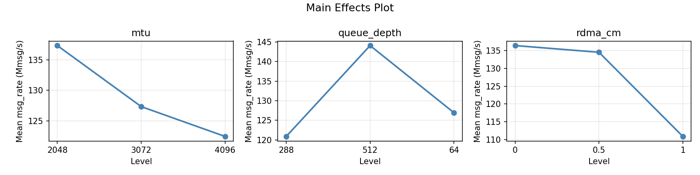
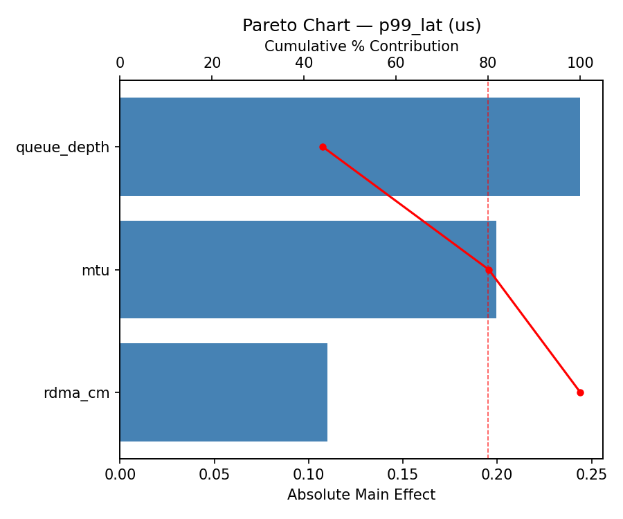
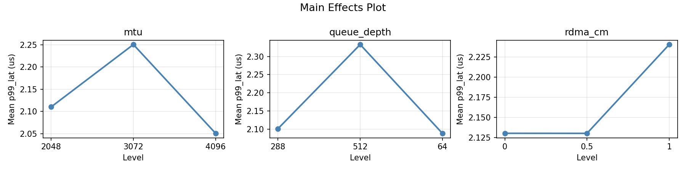
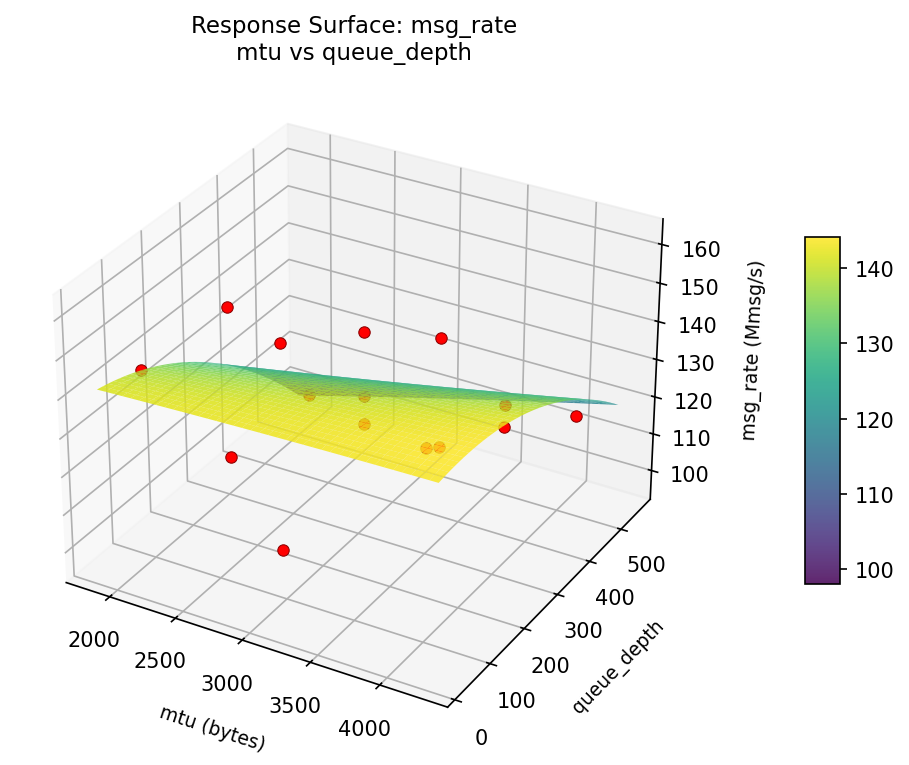
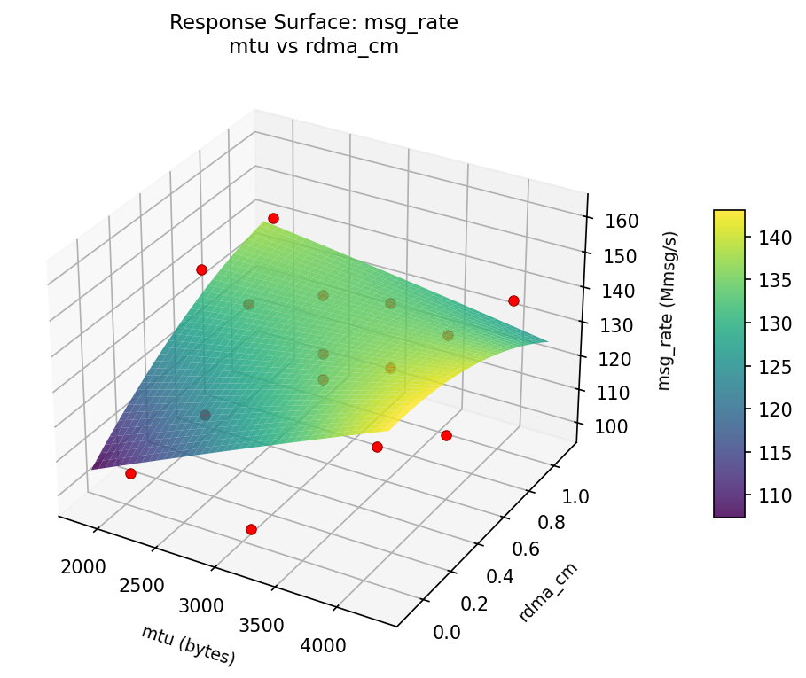
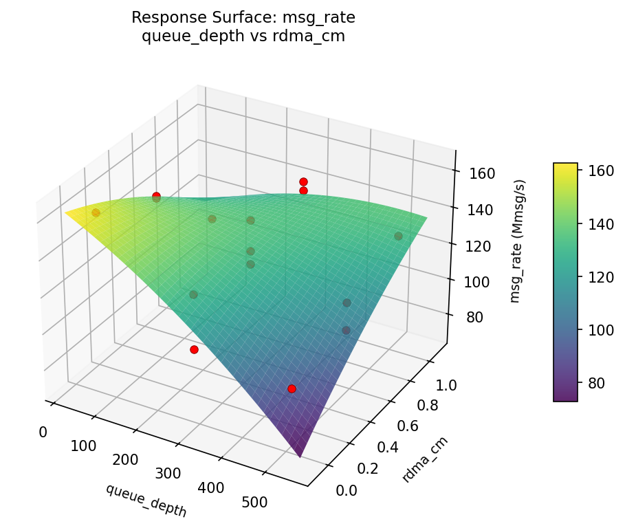
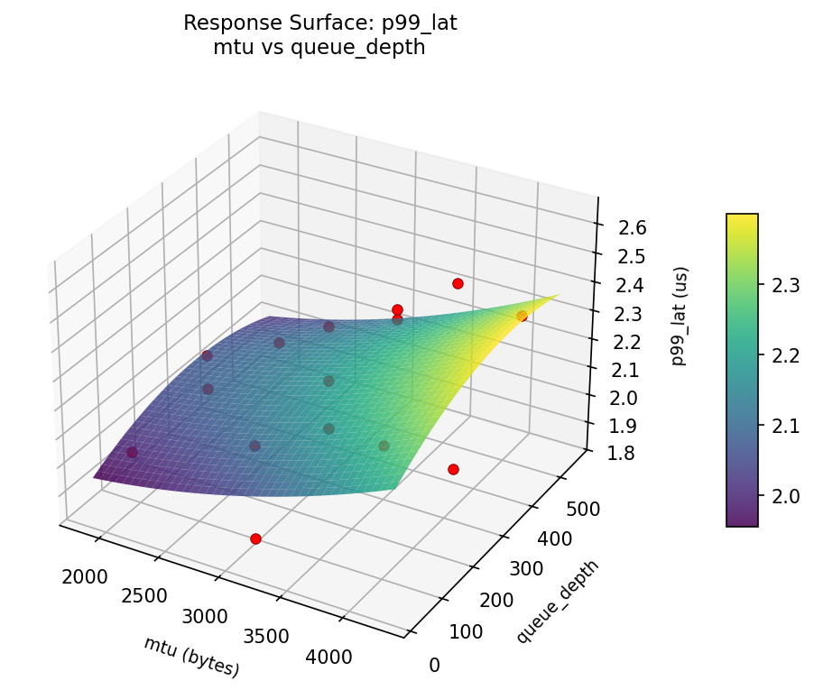
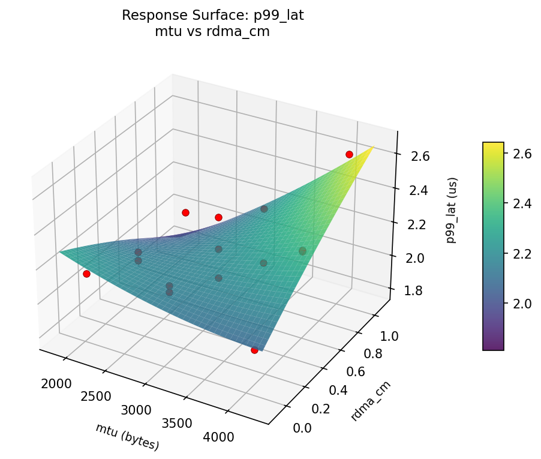
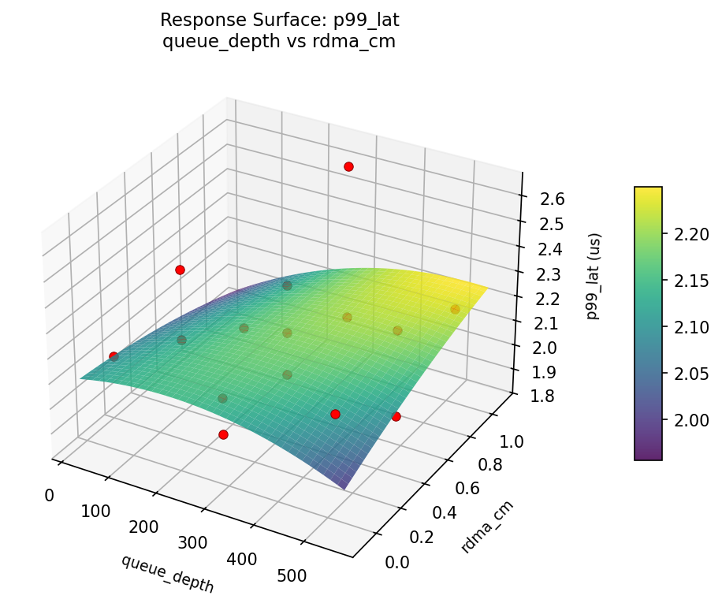

Summary
This experiment investigates infiniband network tuning. Box-Behnken design to optimize InfiniBand HDR network throughput and tail latency.
The design varies 3 factors: mtu (bytes), ranging from 2048 to 4096, queue depth, ranging from 64 to 512, and rdma cm, ranging from 0 to 1. The goal is to optimize 2 responses: msg rate (Mmsg/s) (maximize) and p99 lat (us) (minimize). Fixed conditions held constant across all runs include ib speed = HDR, ports = 1.
A Box-Behnken design was chosen because it efficiently fits quadratic models with 3 continuous factors while avoiding extreme corner combinations — requiring only 15 runs instead of the 8 needed for a full factorial at two levels.
Quadratic response surface models were fitted to capture potential curvature and factor interactions. The RSM contour plots below visualize how pairs of factors jointly affect each response.
Key Findings
For msg rate, the most influential factors were mtu (38.2%), queue depth (34.7%), rdma cm (27.1%). The best observed value was 161.8 (at mtu = 3072, queue depth = 288, rdma cm = 0.5).
For p99 lat, the most influential factors were rdma cm (34.8%), mtu (34.5%), queue depth (30.6%). The best observed value was 1.854 (at mtu = 4096, queue depth = 288, rdma cm = 0).
Recommended Next Steps
- Run confirmation experiments at the predicted optimal settings to validate the model.
- Consider whether any fixed factors should be varied in a future study.
Experimental Setup
Factors
| Factor | Levels | Type | Unit |
|---|
mtu | 2048, 4096 | continuous | bytes |
queue_depth | 64, 512 | continuous | |
rdma_cm | 0, 1 | continuous | |
Fixed: ib_speed=HDR, ports=1
Responses
| Response | Direction | Unit |
|---|
msg_rate | ↑ maximize | Mmsg/s |
p99_lat | ↓ minimize | us |
Experimental Matrix
The Box-Behnken Design produces 15 runs. Each row is one experiment with specific factor settings.
| Run | mtu | queue_depth | rdma_cm |
|---|
| 1 | 3072 | 64 | 0 |
| 2 | 3072 | 288 | 0.5 |
| 3 | 4096 | 288 | 1 |
| 4 | 4096 | 288 | 0 |
| 5 | 3072 | 288 | 0.5 |
| 6 | 3072 | 288 | 0.5 |
| 7 | 2048 | 288 | 1 |
| 8 | 4096 | 64 | 0.5 |
| 9 | 3072 | 64 | 1 |
| 10 | 4096 | 512 | 0.5 |
| 11 | 2048 | 288 | 0 |
| 12 | 3072 | 512 | 1 |
| 13 | 2048 | 64 | 0.5 |
| 14 | 2048 | 512 | 0.5 |
| 15 | 3072 | 512 | 0 |
How to Run
$ doe info --config use_cases/11_infiniband_network/config.json
$ doe generate --config use_cases/11_infiniband_network/config.json --output results/run.sh --seed 42
$ bash results/run.sh
$ doe analyze --config use_cases/11_infiniband_network/config.json
$ doe optimize --config use_cases/11_infiniband_network/config.json
$ doe optimize --config use_cases/11_infiniband_network/config.json --multi
$ doe report --config use_cases/11_infiniband_network/config.json --output report.html
Analysis Results
Generated from actual experiment runs.
Response: msg_rate
Pareto Chart

Main Effects Plot

Response: p99_lat
Pareto Chart

Main Effects Plot

Response Surface Plots
3D surfaces fitted with quadratic RSM. Red dots are observed data points.
📊
How to Read These Surfaces
Each plot shows predicted response (vertical axis) across two factors while other factors are held at center. Red dots are actual experimental observations.
- Flat surface — these two factors have little effect on the response.
- Tilted plane — strong linear effect; moving along one axis consistently changes the response.
- Curved/domed surface — quadratic curvature; there is an optimum somewhere in the middle.
- Saddle shape — significant interaction; the best setting of one factor depends on the other.
- Red dots far from surface — poor model fit in that region; be cautious about predictions there.
msg_rate (Mmsg/s) — R² = 0.864, Adj R² = 0.618
The model fits well — the surface shape is reliable.
Curvature detected in mtu, rdma_cm — look for a peak or valley in the surface.
Strongest linear driver: rdma_cm (increases msg_rate).
Notable interaction: mtu × rdma_cm — the effect of one depends on the level of the other. Look for a twisted surface.
p99_lat (us) — R² = 0.622, Adj R² = -0.058
Moderate fit — surface shows general trends but some noise remains.
Strongest linear driver: queue_depth (increases p99_lat).
msg: rate mtu vs queue depth

msg: rate mtu vs rdma cm

msg: rate queue depth vs rdma cm

p99: lat mtu vs queue depth

p99: lat mtu vs rdma cm

p99: lat queue depth vs rdma cm

Full Analysis Output
=== Main Effects: msg_rate ===
Factor Effect Std Error % Contribution
--------------------------------------------------------------
mtu 26.0250 4.9434 45.6%
rdma_cm 20.0250 4.9434 35.1%
queue_depth 11.0250 4.9434 19.3%
=== Summary Statistics: msg_rate ===
mtu:
Level N Mean Std Min Max
------------------------------------------------------------
2048 4 119.3250 18.6784 98.6000 138.9000
3072 7 124.5286 17.9595 102.5000 146.2000
4096 4 145.3500 13.7551 128.3000 161.8000
queue_depth:
Level N Mean Std Min Max
------------------------------------------------------------
288 7 123.8000 18.3463 98.6000 147.4000
512 4 131.1250 19.5172 103.7000 146.2000
64 4 134.8250 23.2940 109.1000 161.8000
rdma_cm:
Level N Mean Std Min Max
------------------------------------------------------------
0 4 118.9250 21.7403 98.6000 145.1000
0.5 7 128.4143 20.5829 102.5000 161.8000
1 4 138.9500 11.0889 123.3000 147.4000
=== Main Effects: p99_lat ===
Factor Effect Std Error % Contribution
--------------------------------------------------------------
rdma_cm 0.3216 0.0503 57.7%
queue_depth 0.1816 0.0503 32.6%
mtu 0.0542 0.0503 9.7%
=== Summary Statistics: p99_lat ===
mtu:
Level N Mean Std Min Max
------------------------------------------------------------
2048 4 2.1778 0.3372 1.8540 2.6320
3072 7 2.1336 0.1425 1.9730 2.3140
4096 4 2.1877 0.1403 2.0240 2.3670
queue_depth:
Level N Mean Std Min Max
------------------------------------------------------------
288 7 2.2401 0.2271 1.9730 2.6320
512 4 2.1205 0.1382 2.0090 2.3080
64 4 2.0585 0.1548 1.8540 2.1790
rdma_cm:
Level N Mean Std Min Max
------------------------------------------------------------
0 4 2.1405 0.0841 2.0230 2.2160
0.5 7 2.0499 0.1503 1.8540 2.3140
1 4 2.3715 0.1906 2.1790 2.6320
Optimization Recommendations
=== Optimization: msg_rate ===
Direction: maximize
Best observed run: #10
mtu = 4096
queue_depth = 512
rdma_cm = 0.5
Value: 161.8
RSM Model (linear, R² = 0.34):
Coefficients:
intercept: +128.6933
mtu: +13.6875
queue_depth: +5.3625
rdma_cm: +1.4250
Predicted optimum:
mtu = 4096
queue_depth = 512
rdma_cm = 0.5
Predicted value: 147.7433
Factor importance:
1. mtu (effect: 27.4, contribution: 57.0%)
2. queue_depth (effect: 10.7, contribution: 22.3%)
3. rdma_cm (effect: 9.9, contribution: 20.7%)
=== Optimization: p99_lat ===
Direction: minimize
Best observed run: #8
mtu = 2048
queue_depth = 288
rdma_cm = 1
Value: 1.854
RSM Model (linear, R² = 0.11):
Coefficients:
intercept: +2.1598
mtu: +0.0219
queue_depth: +0.0341
rdma_cm: -0.0760
Predicted optimum:
mtu = 3072
queue_depth = 512
rdma_cm = 0
Predicted value: 2.2699
Factor importance:
1. rdma_cm (effect: 0.2, contribution: 36.2%)
2. mtu (effect: 0.1, contribution: 33.2%)
3. queue_depth (effect: 0.1, contribution: 30.6%)
Multi-Objective Optimization
When responses compete, Derringer–Suich desirability finds the best compromise.
Each response is scaled to a 0–1 desirability, then combined via a weighted geometric mean.
Overall Desirability
D = 0.7799
Per-Response Desirability
| Response | Weight | Desirability | Predicted | Dir |
|---|
msg_rate |
1.5 |
|
161.80 0.9545 161.80 Mmsg/s |
↑ |
p99_lat |
1.0 |
|
2.18 0.5760 2.18 us |
↓ |
Recommended Settings
| Factor | Value |
|---|
mtu | 3072 bytes |
queue_depth | 288 |
rdma_cm | 0.5 |
Source: from observed run #10
Trade-off Summary
Sacrifice = how much worse than single-objective best.
| Response | Predicted | Best Observed | Sacrifice |
|---|
p99_lat | 2.18 | 1.85 | +0.32 |
Top 3 Runs by Desirability
| Run | D | Factor Settings |
|---|
| #4 | 0.7311 | mtu=2048, queue_depth=288, rdma_cm=1 |
| #3 | 0.7200 | mtu=3072, queue_depth=512, rdma_cm=1 |
Model Quality
| Response | R² | Type |
|---|
p99_lat | 0.8835 | quadratic |
Full Multi-Objective Output
============================================================
MULTI-OBJECTIVE OPTIMIZATION
Method: Derringer-Suich Desirability Function
============================================================
Overall desirability: D = 0.7799
Response Weight Desirability Predicted Direction
---------------------------------------------------------------------
msg_rate 1.5 0.9545 161.80 Mmsg/s ↑
p99_lat 1.0 0.5760 2.18 us ↓
Recommended settings:
mtu = 3072 bytes
queue_depth = 288
rdma_cm = 0.5
(from observed run #10)
Trade-off summary:
msg_rate: 161.80 (best observed: 161.80, sacrifice: +0.00)
p99_lat: 2.18 (best observed: 1.85, sacrifice: +0.32)
Model quality:
msg_rate: R² = 0.3266 (linear)
p99_lat: R² = 0.8835 (quadratic)
Top 3 observed runs by overall desirability:
1. Run #10 (D=0.7799): mtu=3072, queue_depth=288, rdma_cm=0.5
2. Run #4 (D=0.7311): mtu=2048, queue_depth=288, rdma_cm=1
3. Run #3 (D=0.7200): mtu=3072, queue_depth=512, rdma_cm=1